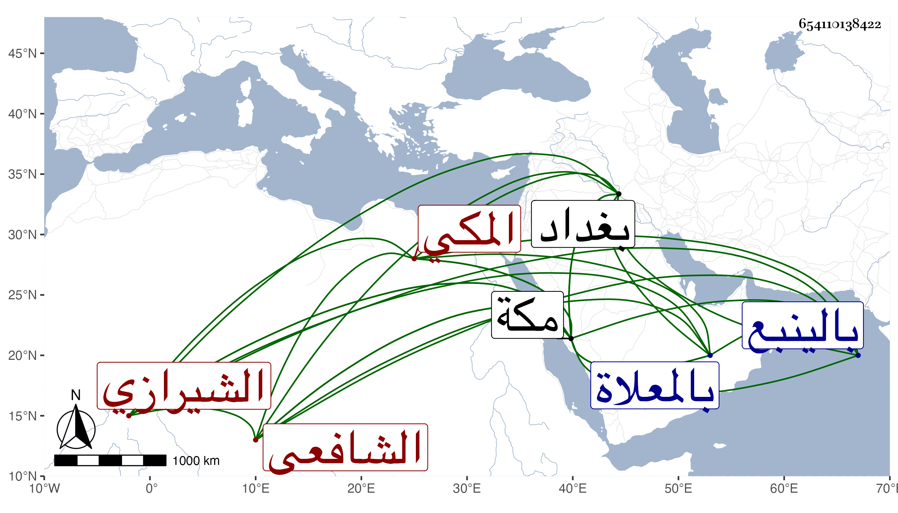

0902Sakhawi.DawLamic.ITO20230111-ara1.EIS1600.654110138422
Biography ID: 654110138422
640
علي بن أحمد بن محمد العلاء الشيرازي ثم المكي الشافعي . ولد في سنة ثمان وثمانين وسبعمائة ببغداد واشتغل بالعلم في كبره وأخذ عن غير واحد وجال وصحب الرجال إلى أن برع في الفقه وأصوله والنحو والمنطق والتصوف وغيرها وصنف نفسيرا وشرحا على الحاوي وغير ذلك وتكلم على الناس في علم التوحيد بعبارة بليغة فصيحة دالة على غزارة مدده وتحققه بكلام القوم وأما في علوم الأوائل فكان لا يجارى فيها وكذا كان إليه المنتهى في علم الرمل وقد قطن مكة بعيد الثلاثين فسكن الزاوية المعروفة بالجنيد بجبل قعيقعان وأخذ عنه غير واحد وصار له صيت ، لقيته بالينبع في سنة ست وخمسين فسمعت من لفظه خطبة شرحة على الحاوي وشيئا من أول تفسيره وأشياء من تصانيفه ، وكان نير الشيبة فصيحا مفوها حسن الظاهر وسريرته في تصوفه إلى الله . مات في شوال سنة إحدى وستين بمكة وصلي عليه عند باب الكعبة ودفن بالمعلاة رحمه الله .
